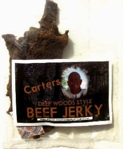

Carter's Deepwood Jerky

Remembering a master.
Description
Mark Carter had been making jerky for more than a decade out of his facility in
Indio, CA. He marketed it via word of mouth and sold locally, but if you emailed him directly,
you could get Carter's deep wood jerky shipped straight to you. Mark Carter started his jerky
from London Broil, and added to it a special marinade he had perfected over the years.
After marinating the meat, Mark brushes on another layed of sauce before smoking it over two types of woods.
Carter's beef jerky is among the best the world has ever seen, with rich almost cheesy notes lingering past the initial
worcestershire flavor. Mark Carter passed away in recent years. His jerky will forevr be remembered.
Ingredients
- 6lbs of London broil, cut into 3/16 inch or a little thicker.
- 1 cup of A-1 steak sauce
- 1 cup of roasted teriyaki
- 1/2 cup of soy sauce
- 1/2 cup of molasses
- 3 oz pineapple juice
- 1 cup of Worcestershire sauce
Steps
- Blend all the marinade ingredients together. Cut meat 3/16 thick.
- Marinade 8-10 days. Drain and then add back a little fresh marinade and let it rest for a night.
Drain again in the morning.
- Lay on smoker racks for smoking.
- Make a "finish" sauce with: 1/2 cup of Lea & Perins steak sauce, tbps molasses, the juice of 2 limes,
1/2 tsp crushed garlic, 1tbsp of brown sugar.
- Blend and brush on sauce on one side of the meat, then put it back in the smoker with 1 pan of mesquite (can add a little cherry wood.
Makes enough for approx. 3lbs. Double or triple if you want more (you will).